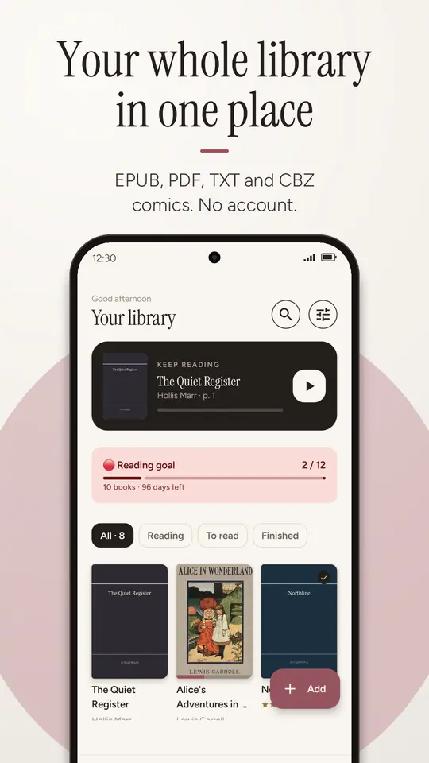
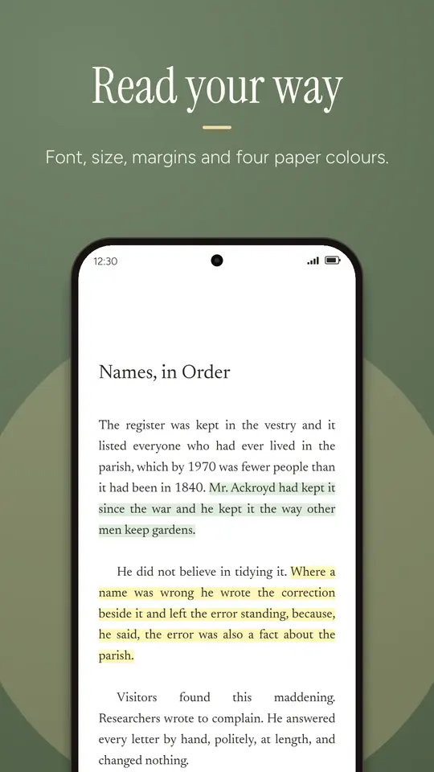

How to open EPUB files on Android
Someone sent you a book on WhatsApp, you borrowed one from a library website, or you had it on your computer. You tap it on your phone and Android says there's no app that can open it. That's normal, and it takes a minute to fix.
Android doesn't come with an EPUB reader. Install one (for example Balda, free and with no account), tap the file again and choose “Open with Balda”. If the file ends in .acsm or you bought the book with DRM, the reader isn't the problem: see if the EPUB won't open.
Why Android can't open EPUB files
An EPUB is basically a small packaged website: chapters in HTML, a stylesheet, the book's fonts and its images, all inside a ZIP file. Android can open photos, videos and PDFs, but nothing built in understands that package and lays it out as pages. So when you tap one, the system either offers to search the Play Store or says it can't open the file.
The upside of EPUB over PDF is that the text reflows to fit your screen: make the font bigger and the book re-paginates, instead of making you zoom in and scroll sideways.
Opening an EPUB, step by step
First install Balda from Google Play. There's no sign-up or login. Then pick the route that matches where your book is:
If the book came through WhatsApp, Telegram, Gmail or Drive
- Open the chat or email and tap the
.epubfile (download it first if needed). - Android asks which app to use: pick Balda. If it doesn't ask, use ⋮ → Open with or Share → Balda.
- The book is copied into your library and opens straight away. Next time it'll be there, even if you delete the chat.
If the book is in Downloads or another folder on your phone
- Open Balda and tap the “Add” button (bottom right).
- Android's file picker opens. Find the book in Downloads or wherever it is. You can select several at once by long-pressing the first one.
- Tap Select. Balda imports them one by one and then tells you how many were added and whether any were already there.

If you keep lots of books in one folder
If you often copy books from your computer or always download them to the same place, it's easier to give Balda access to that folder once:
- In Balda, go to Settings → Book folders → Add folder.
- Choose the folder. Android doesn't allow access to the whole Downloads folder, but a folder inside it works, such as
Download/BooksorDocuments/Books. - From then on, every time you open Balda it checks that folder and adds any new books on its own.
Balda only looks at the folders you give it. It doesn't scan the rest of your phone, and it never touches the original file: if you delete a book in Balda, the one in your folder stays where it was.
Make the text comfortable to read
With the book open, tap the middle of the screen to show the controls. From there you can change:
- Font: the book's own (the default), a serif, a sans, or one with extra letter spacing designed for dyslexia.
- Size, line spacing and margins, with the text reflowing instantly.
- Paper: day, sepia, night and pure black for OLED screens.
- Pages or continuous scroll, and turning pages with the volume buttons.
You also get the book's table of contents, search, highlights in five colours with notes, and read aloud that keeps going with the screen off and works with your headphone buttons.

Other ways to read EPUB on Android
Balda isn't the only option, and it's worth knowing what each one offers:
| App | Account | Where your books live | Best for |
|---|---|---|---|
| Google Play Books | Yes, Google | Uploaded to your library in Google's cloud | Reading the same book on phone, tablet and web |
| Classic readers (ReadEra, Moon+ Reader…) | No | On your phone | People who want every option and format |
| Balda | No | On your phone; they never leave it | A polished reader with a real bookcase to arrange your books, plus reading stats and goals |
If you need MOBI or FB2, a classic reader will serve you better today: Balda reads EPUB, PDF, TXT and CBZ comics, and nothing else.
If the EPUB won't open
The file ends in .acsm
An .acsm file isn't the book: it's a small download voucher that some stores and library lending services give you. You open it with an app that supports Adobe DRM (Adobe Digital Editions on a computer, or whatever app your library recommends), which then downloads the protected book. Those books can only be read in Adobe-licensed apps, so Balda can't open them.
The book has DRM
Books bought on Kindle, Kobo or Apple Books are usually protected and can only be read in that store's app. DRM-free EPUBs (from publishers that don't use it, Project Gutenberg, stores like Humble Bundle, and many independent authors) open in any reader.
Balda says it can't open it
- Incomplete download: download it again. A half-downloaded EPUB can't be read.
- Wrong extension: sometimes the file arrives as
book.epub.ziporbook.zip. Rename it to.epubin the Files app. - It isn't an EPUB: if it's
.mobior.azw3(Kindle formats) and DRM-free, you can convert it to EPUB on a computer with the free Calibre. - It's a CBR comic: see how to convert CBR to CBZ.
FAQ
Can I read EPUB files offline?
Yes. Once a book is in Balda, you can read it offline. The app doesn't need the internet for anything to do with your books.
Is Balda free?
Yes. It shows ads in the library and other browsing screens, and sometimes a full-screen one when you close a book. Never while you're reading.
How do I move books from my computer to my phone?
Connect your phone by USB, choose “File transfer” and copy the EPUBs into a folder such as Documents/Books. Then give Balda access to that folder in Settings → Book folders and it will add them automatically. You can also upload them to Drive and open them from there with “Open with”.
What happens to my books if I change phones?
In Settings → Backup you can save a .zip file with your library, progress, highlights and, if you like, the books themselves. Store it wherever you want (Drive, your computer…) and restore it on the new phone.
Can it open PDFs too?
Yes: Balda opens PDFs with pinch-to-zoom and, on Android 15 or later, text search. Scanned documents and complex layouts show exactly as printed; for novels, EPUB is more comfortable.
Open your first EPUB
Balda is free, needs no account, and your books never leave your phone. For Android 8 and later.
On Google PlayGet it free